エジソンラボ シューベルト
概要
Edison Lab の SchuBelt Lサイズ(2023) \13100.- を買ってみたので、そのレビュー。
はじめに
旅行用に小型機の機内持ち込みサイズ 45x35x20cm に収まるリュックを探していたところ SchuBelt Lサイズ(2023) が良さそうだったので試しに買ってみました。 SchuBelt はビックカメラなどの実店舗でも販売されている割に Web 上の情報が少なかったので、自分で気になった点などをまとめました。
SchuBelt
SchuBelt Lサイズ(2023) はクルマのシートベルトのように自動的に収納される肩紐を備えたユニークなリュックで、16インチ級のノートパソコンが入る＆マチを広げて容量を拡張できるので宿泊をともなうビジネス出張にも使えるといったものになっています。
現時点で SchuBelt Sサイズ(2022) と SchuBelt Sサイズ(2023) と SchuBelt Lサイズ(2023) の三種類があるのですが、公式 Web ページでも仕様がまとめられておらず、CAMPFIREのページに SchuBelt Lサイズ(2023) の仕様があります。Sサイズ と Lサイズ の違いはサイズ以外に Sサイズ のみショルダー対応、Lサイズ のみマチ拡張対応、スマホポケットなど一部配置が逆といったものがあります。
SchuBelt Lサイズ(2023) の定価は \27000 のようですが、実勢価格はビックカメラで \21800(10%ポイント)、アマゾンで \13200 となっています。なお CAMPFIRE の早割価格は \13000～ でした。
また実測してみると私の個体は以下の通り CAMPFIRE の記載よりも少し大きめでした。
- 42x32x11(拡張時 42x32x19) [cm]
- 1038 [g]
外観
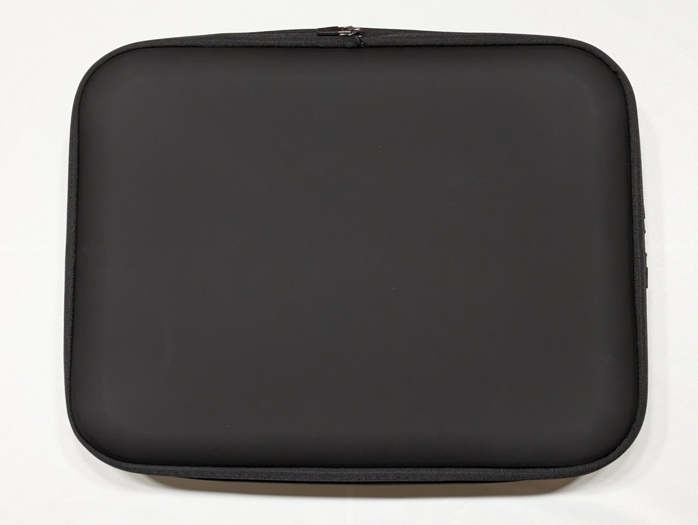
前面(背負ったときに一番よく見える後ろ側) はよく見ると布目があるものの、つるっとしていて印象は悪くありません。摩擦への耐性はわからないので傷が増えてきたときにどうなるかは心配ですが。
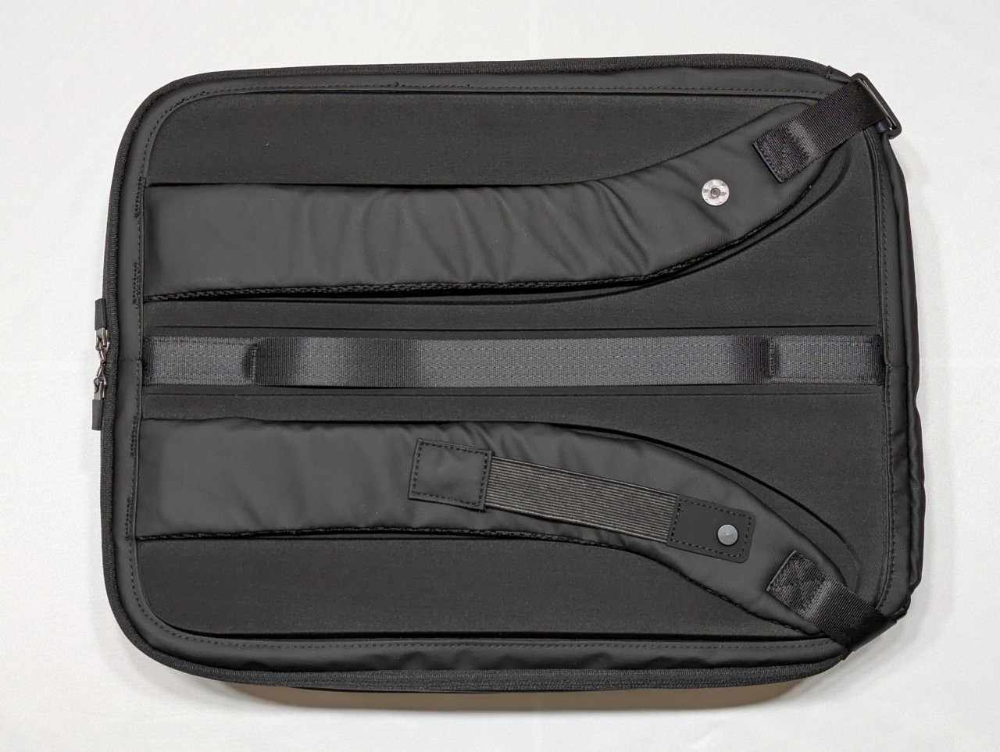
後面(背負ったときに背中にあたる面) はこの商品の独創的なところで、肩紐形状に合わせて凹みが用意されていたり、マグネットで保持できるようになっていたりします。チェストストラップの長さが微妙にズレているところや、ベルトの角度と凹み形状がズレているあたりに詰めの甘さを感じます。あとマグネットが強過ぎて微妙に使いづらいので改善して欲しいです。
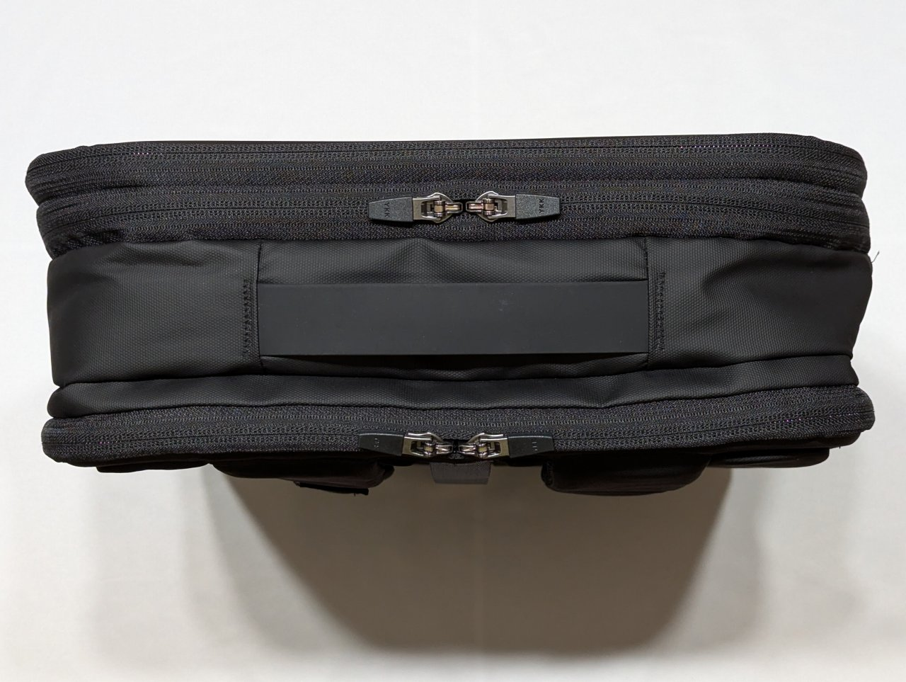
天面はファスナー3本(前面から順に拡張用、active zone 用、PC zone 用)と持ち手。ファスナーがダブルジップなので上だけ開ける・横だけ開けるということができるのは便利です。また持ち手がシリコンになっているのも好印象。こういうところが合皮だと剥げるんですよね。
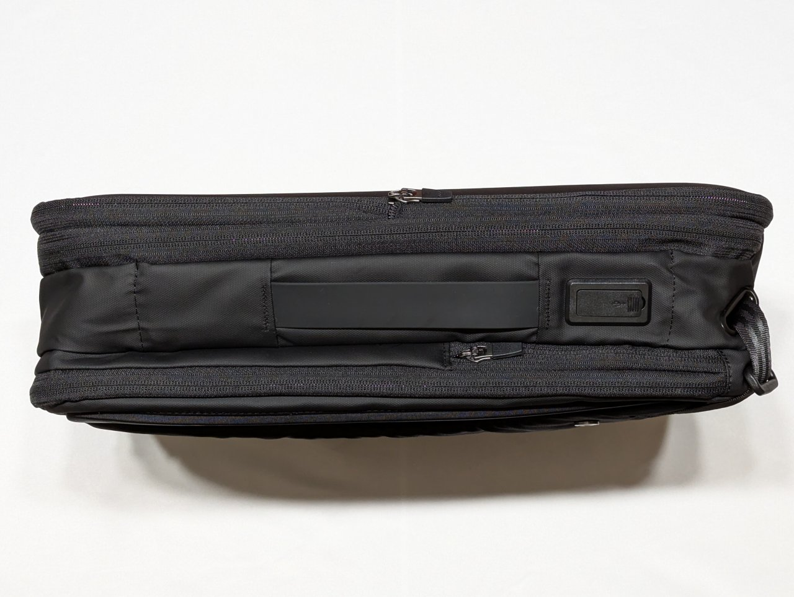
左側面(背負ったときの左手側)にはモバイルバッテリー用 USB ポートとスマホポケット、それに同じくシリコンの持ち手。USB ポートは A と C の両対応。
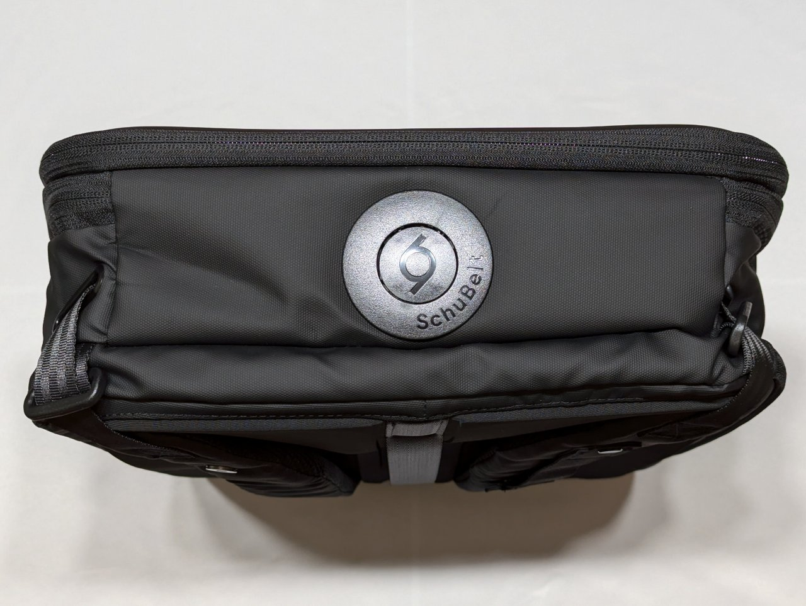
底面には長さ調節用ボタン。リュックの中身が空だと軽すぎて調節しにくいので、何か重しを入れてから調節すると良さそうです。
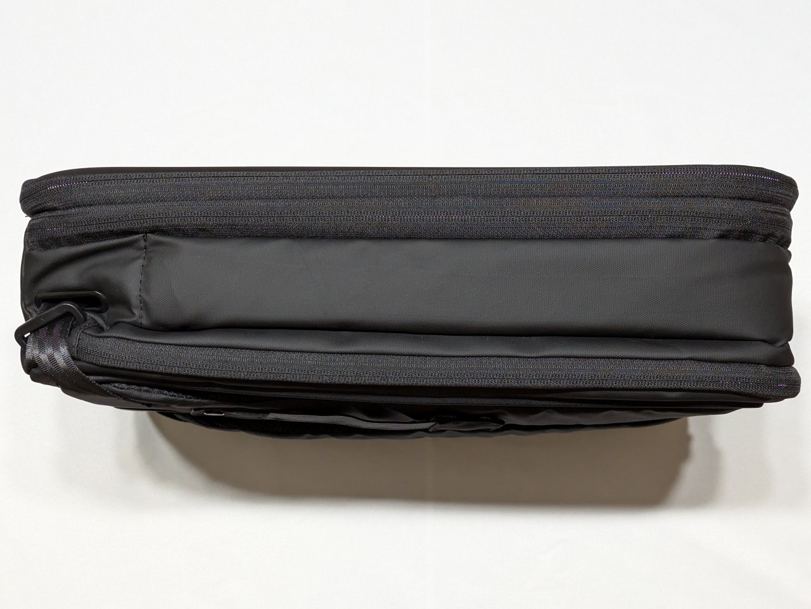
右側面は何もなし。左利きの人のことなんて考えていない潔さを感じます。
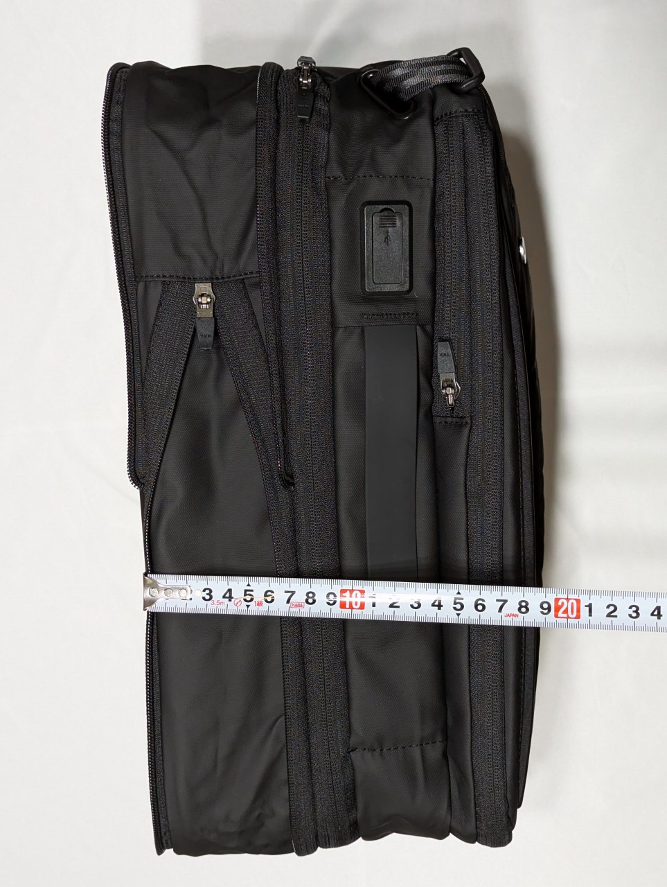
また拡張時は active zone が倍くらいになります。これだけ大きくなれば旅行でも問題なく使えそうです。
内部
active zone (前面側) と PC zone (後面側) の2つのスペースがあり、かさばるものは active zone、薄いものや小さなガジェットは PC zone という想定になっているようです。
active zone
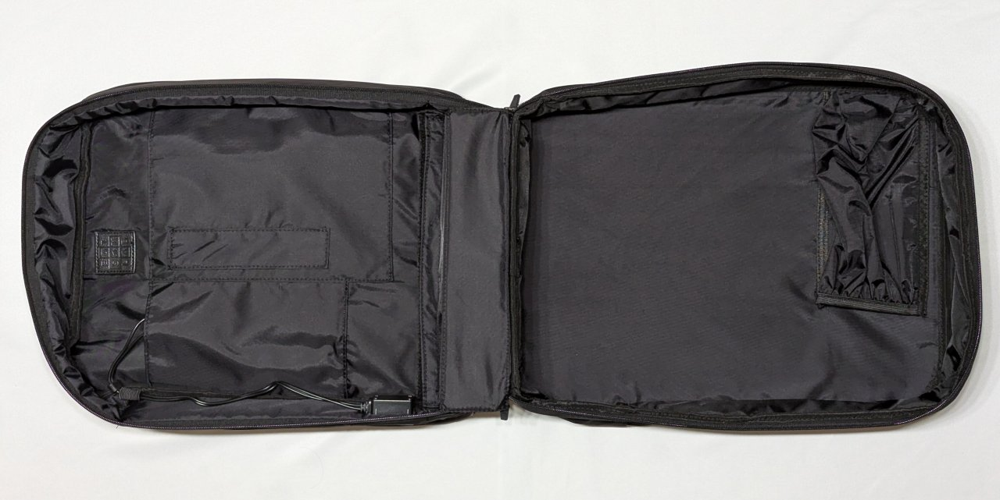
180度開くのでスーツケースのように荷物を詰め込めます。ただしずり落ち防止ネットがついていないので、バッグインバッグを使用するなど運用面での配慮が必要になりそうです。
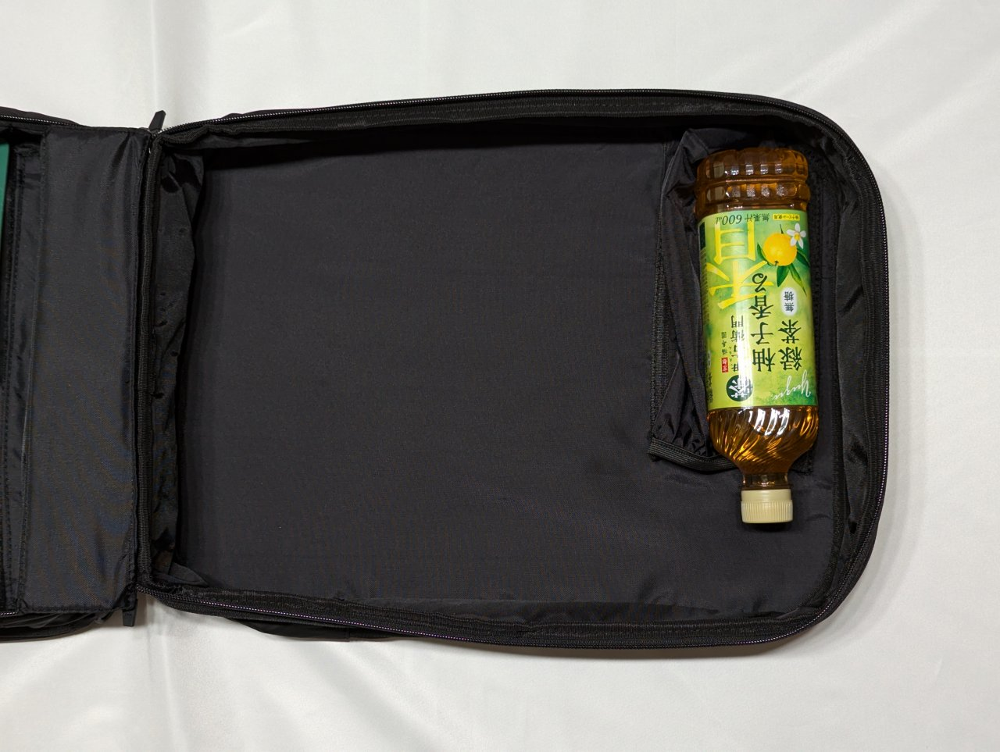
前面側の上部には水平にペットボトルを保持できるスペースがあるのでファスナーを少しだけ開けて出し入れできます。たいていカバンの上部は（重力の関係で）空いているので面白いアイデアだと思います。
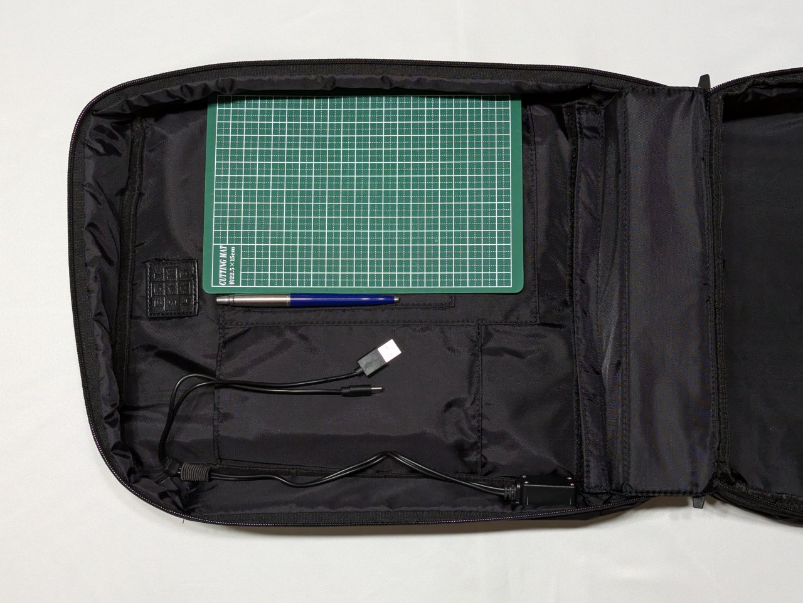
後面側にはモバイルバッテリー用・ペン用・A5サイズのポケットがあります。個人的にモバイルバッテリーは使わないのでその部分は不要なのですが、取り外せるようにはなっていません。
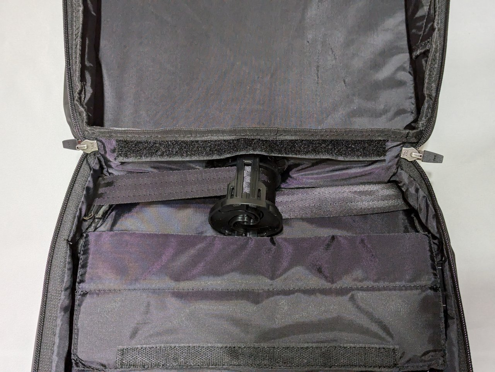
また後面側の下部にシューベルト機構のスペースがあります。ベルクロを外すだけで簡単にアクセスできるようになっているので、おそらくよく詰まったりするんだろうなという感じがします。
PC zone
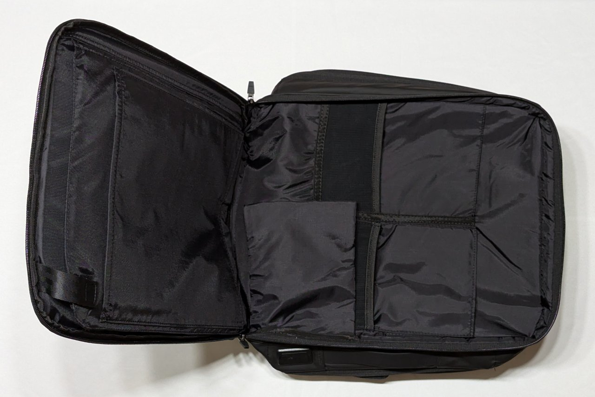
90度しか開かないのが残念な気もしますが、PC zone の下部に荷物を詰め込むとシューベルト機構と干渉しそうなので、180度開いて荷物を詰め込むスペースではないということなんでしょう。ポケットにはガジェット類入れるくらいに抑えて欲しいという意思を感じます。それにしてもメッシュポケットは浅過ぎないでしょうか。
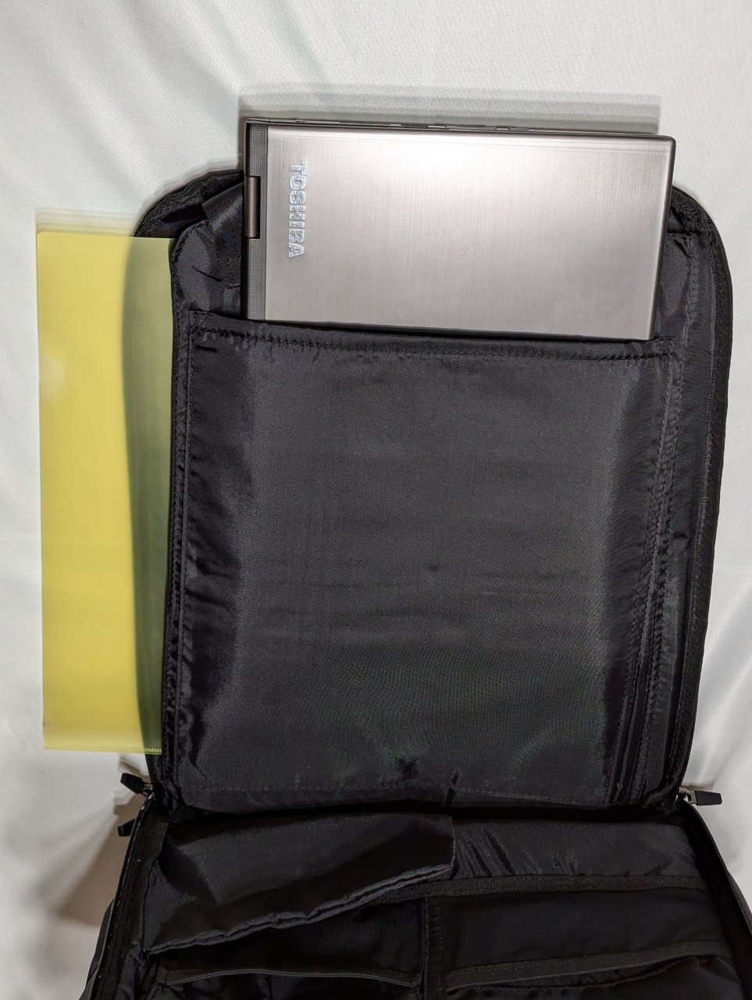
PCエリアは角がベルクロで固定されているだけなので、上からでも横からでも出し入れできるようになっています。16インチのMBPが入るとのことですが、私は12インチ級モバイルノートがせいぜいなので、タブレット用ポケットにモバイルノート入れて、PC用スペースには書類を入れる運用になりそうです。旅行中に受け取ったパンフレットなど、紙類が出し入れしやすく、ぐしゃぐしゃにならないスペースって便利なんですよね。